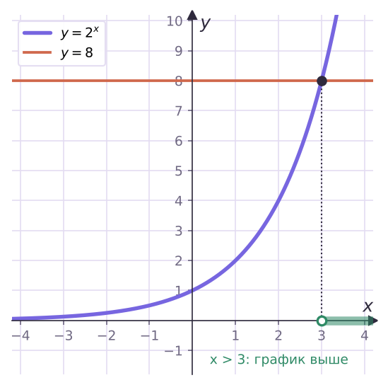
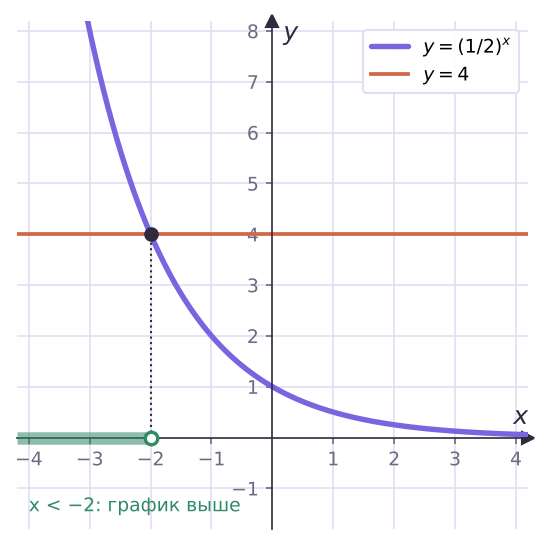
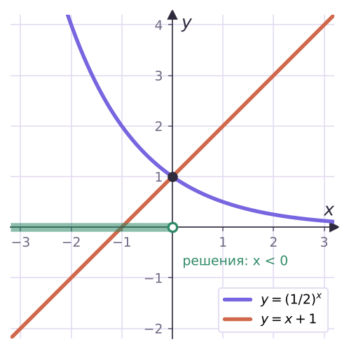

Теория
Неравенства, в которых неизвестное стоит в показателе степени, называют показательными: 2x > 8, (1/3)x ≤ 9, 4x − 2x − 2 > 0. Приёмы те же, что для уравнений на уроке 12 (одно основание, за скобки, замена), но появляется один новый вопрос — сохранится ли знак неравенства.
Главное правило
Если a > 1, то af > ag ⇔ f > g — знак сохраняется.
Если 0 < a < 1, то af > ag ⇔ f < g — знак меняется на противоположный.
Почему. При a > 1 функция y = ax возрастает: большему показателю соответствует большая степень, и наоборот. При 0 < a < 1 она убывает: большей степени соответствует меньший показатель. Проверь на числах: (1/2)¹ = 0,5 > (1/2)³ = 0,125, хотя 1 < 3.


Главная ошибка темы — «снять» основание и забыть посмотреть, больше оно единицы или меньше. Возьми за правило: прежде чем сравнивать показатели, вслух скажи «основание больше единицы — знак тот же» или «основание меньше единицы — знак меняю».
Реши неравенство 3x ≤ 1/9.
1/9 = 3−2: 3x ≤ 3−2. Основание 3 > 1, знак сохраняем: x ≤ −2.
Ответ: (−∞; −2].
Реши неравенство (1/3)x > 27.
27 = (1/3)−3: (1/3)x > (1/3)−3. Основание 1/3 < 1, знак меняем: x < −3.
Можно и через основание 3: 3−x > 3³, −x > 3, x < −3 — тот же ответ. Ответ: (−∞; −3).
Реши неравенство 0,5x − 1 ≥ 0,25.
0,25 = 0,5². Основание 0,5 < 1, знак меняем: x − 1 ≤ 2, x ≤ 3.
Ответ: (−∞; 3].
Реши неравенство 2x² − 2x < 8.
8 = 2³, основание 2 > 1: x² − 2x < 3, x² − 2x − 3 < 0, (x − 3)(x + 1) < 0.
Ответ: (−1; 3).
Правая часть не степень: отрицательное число и ноль
- ax > −3 — верно при всех x: положительное число больше отрицательного.
- ax < 0 и ax ≤ −1 — решений нет.
Реши неравенства: а) 5x > −2; б) 0,3x ≤ 0.
а) 5x > 0 > −2 при любом x. Ответ: (−∞; +∞).
б) 0,3x > 0 всегда. Ответ: решений нет.
Вынесение за скобки
Реши неравенство 3x + 1 − 3x − 1 > 24.
Выносим 3x − 1: 3x − 1(3² − 1) > 24, 8·3x − 1 > 24, 3x − 1 > 3.
Основание 3 > 1: x − 1 > 1. Ответ: (2; +∞).
Замена переменной
Реши неравенство 4x − 3·2x − 4 < 0.
Пусть t = 2x > 0: t² − 3t − 4 < 0, (t − 4)(t + 1) < 0, −1 < t < 4.
С учётом t > 0: 0 < 2x < 4. Левая часть верна всегда, остаётся 2x < 2², x < 2.
Ответ: (−∞; 2).
После замены получается неравенство для t, а не ответ. Нужно вернуться к x: решить 2x < 4. А часть «t > −1» при этом ничего не отрезает — 2x и так положительно.
Графический способ
Если в неравенстве смешаны показательная функция и, например, линейная, алгебраически его не решить. Тогда находят корень соответствующего уравнения (часто подбором) и смотрят по графикам, где одна функция выше другой.

Реши неравенство (1/2)x > x + 1.
Уравнение (1/2)x = x + 1 имеет корень x = 0: 1 = 1. Левая часть убывает, правая возрастает, поэтому корень единственный, а левее него убывающая функция выше возрастающей.
Ответ: (−∞; 0).
Задачи урока
Реши в тетради. Ответы разберём на занятии.
Из учебника
- № 228, 229 — Простейшие неравенства: одно основание, знак по основанию.
- № 230 — Решить уравнение графически.
- № 231 — Квадратный трёхчлен в показателе.
- № 232 — Вынесение общего множителя за скобки.
- № 233 — Замена переменной; целые решения на отрезке.
- № 236 — Решить неравенство графически.
Тест к уроку
Домашнее задание
№ 228, 231, 232 (1, 2) из учебника письменно; № 229 — устно. У каждого неравенства подписать: основание больше или меньше единицы, сохраняется ли знак.